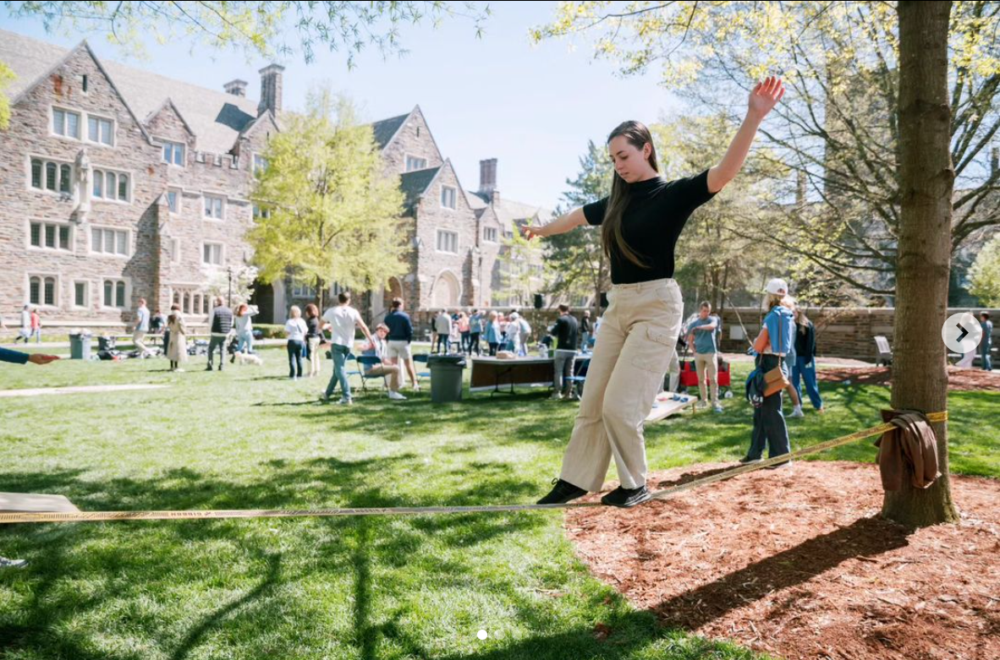
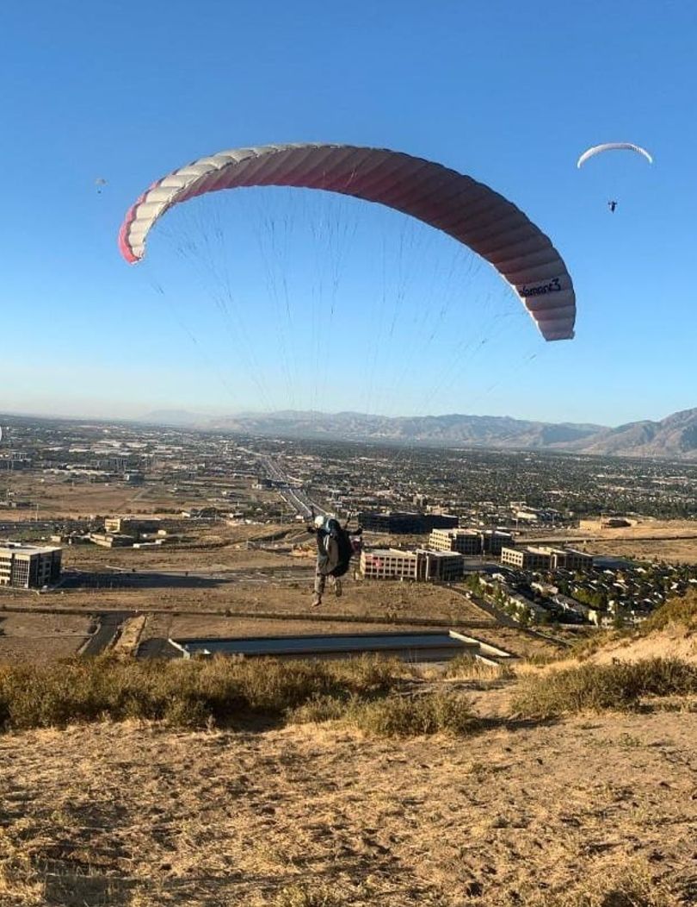

Rock Climbing

Rock climbing is one of my biggest passions it’s a perfect combination of physical challenge and mental focus. Whether I'm bouldering or tackling a multi-pitch route, each climb presents a unique puzzle to solve. There's a special sense of accomplishment in reaching the top after pushing through both physical fatigue and mental barriers. The focus required for climbing not only builds strength but also keeps me present in the moment, making every climb an opportunity to reconnect with nature and myself.
Slacklining
Slacklining is a hobby that has taught me a lot about balance both physically and mentally. Walking a tight rope-like line between two anchors might seem simple at first, but it requires immense focus and patience. I love how slacklining challenges me to stay grounded while also embracing the natural flow of movement. Whether I’m setting up in a local park or tackling more challenging lines, slacklining helps me sharpen my concentration and build resilience in a fun, low-impact way.
Paragliding
As a certified paraglider, I can’t get enough of the feeling of flight. Gliding through the sky, I’m reminded of the incredible freedom and perspective that comes with seeing the world from above. Whether I’m soaring over mountains, valleys, or coastal landscapes, paragliding allows me to experience nature in a way that few other activities can offer. It’s a thrill that combines adventure, serenity, and the beauty of the world from a completely new angle.